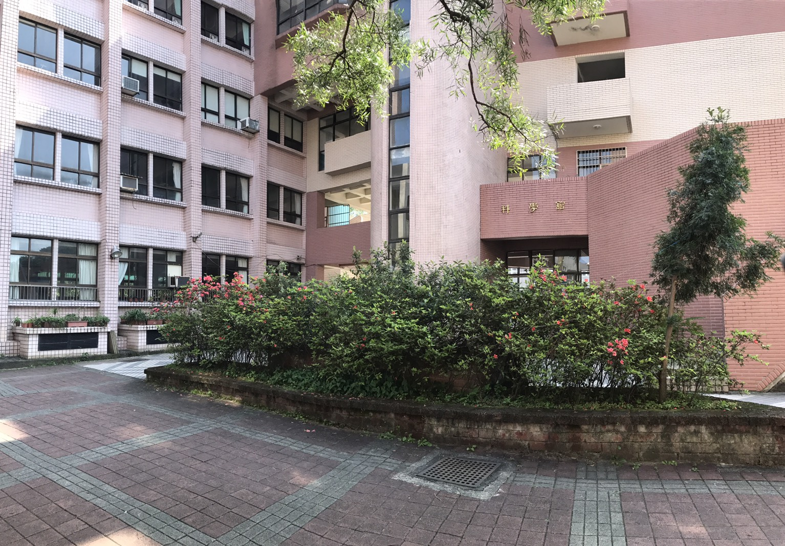
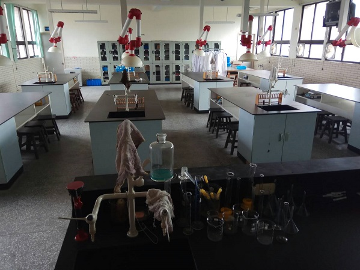
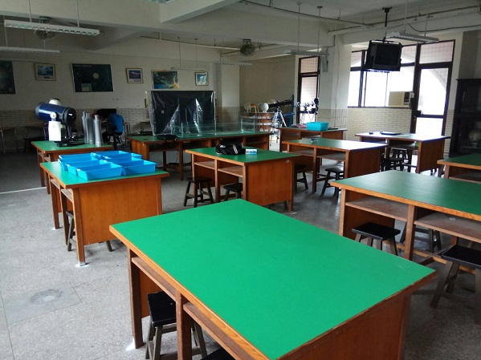
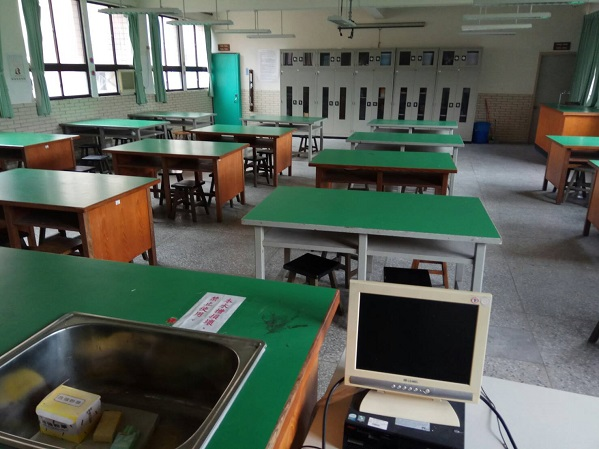
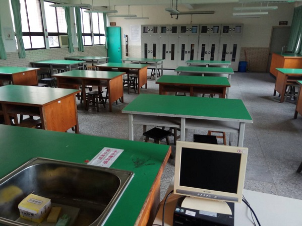

 
 
一樓是設備組的辦公室，還有一間老師辦公室和一間綜合會議廳。
二樓有兩間電腦教室，各自有一台大型伺服器端，能夠支撐幾十台電腦的連動作業。
三、四樓是化學、物理、生物、地科的實驗室，設備還算完善，其中不乏精密型的專業測具，
地科實驗室裡面有好幾台堪稱大砲的架地型望遠鏡，手持類的小型望遠鏡也有十幾副 ;
生物實驗室裡更收藏著日治時期完成的珍貴生物標本。
但是除了以上所說的寶物以外大多數的器材都已經放置一段時間了，處於長期閒置的狀態，少數工具更是不堪使用，
只能希望有更多人有機會來這裡玩科學，還有期待快點有經費來整修了。
點擊我回到上一頁